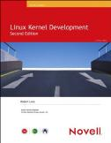

Linux Kernel Development, Second Edition

thus might be biased in what he writes. Let it be known, however, that your editor would never let such concerns get in the way of a fair review. Linux Kernel Development really is only suitable for paperweight duty, and, even then, only until the cheesy binding gives out.Seriously, though, the first edition of Linux Kernel Development was reviewed here in November, 2003. It was, at that time, the only book covering version 2.6 of the kernel, and it did a good job of it. The coverage was not always as deep as one might like, but it was broad, touching on most parts of the kernel. It was, beyond doubt, a book that belonged on every kernel hacker's bookshelf.
The second edition has not messed with that format very much. The book now appears under the Novell Press imprint, but Novell does not appear to have called for any changes. So the basic structure of the book remains the same. The introductory chapter has been split into two, with some additional information on obtaining and building the kernel. There are two completely new chapters; the first looks at working with modules, and the other is a low-level introduction to kobjects and sysfs. The new chapters, like the existing material, are clearly and accurately written. Beyond that, the table of contents reads much like it did in the first edition.
Arguably, the most significant change is that the entire book has been updated to
the 2.6.10 kernel. As readers of the LWN Kernel Page are aware, much has
changed inside the kernel since the 2.6.0-test release which was the base
for the first edition. It was time for an update, and Robert has done
it with style. Your editor feels confident in saying that the second
edition, once again, belongs on every kernel hacker's bookshelf. Then the
first edition can be demoted to paperweight duty.
| Index entries for this article | |
|---|---|
| Kernel | Books |
Posted Mar 11, 2005 1:12 UTC (Fri)
by harisri (guest, #4662)
[Link] (2 responses)
I am delighted by your favourable review (on technical merits alone, of course) of this new edition, which I shall buy ASAP, when it is available in the local book shop.
So many things about this great Open Source OS Kernel I have learned from the first edition, and am really looking forward the newer one.
Thank you for the review.
Posted Mar 14, 2005 17:54 UTC (Mon)
by jeremiah (subscriber, #1221)
[Link]
Posted Apr 20, 2009 1:07 UTC (Mon)
by abelard2008 (guest, #58143)
[Link]
Posted Dec 18, 2010 5:50 UTC (Sat)
by tiffang (guest, #48653)
[Link]
I am a proud owner of the first edition. As you have rightly said, it was/is a great book.Linux Kernel Development, Second Edition
Hari.
I think you forget the obligitory "Your book is alright too" Linux Kernel Development, Second Edition
Linux Kernel Development, Second Edition
Linux Kernel Development, Second Edition
I just want to have the patch from 1st edition.